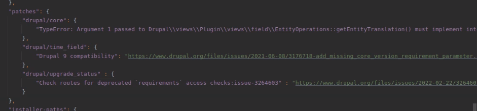
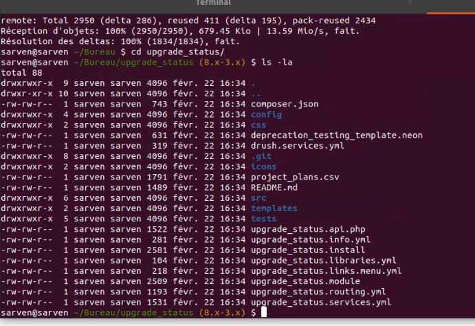
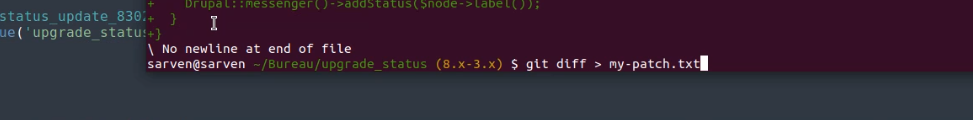
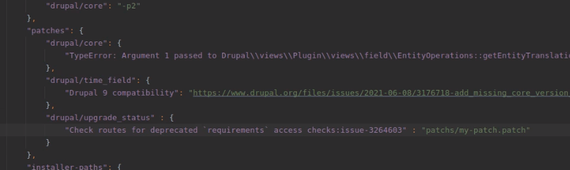

Patch recupere en ligne
rechercher les patchs par rapport au fichier que l'on souhaite
dans coimposer.json dans la partie des patch on ajoute le patch en question

Puis on active le patch avec la console
composer install
C'est tout ce qu'il y a faire, le patch est installé et prêt à être utilisé

Si l'on souhaite modifier rapidement quelque chose pour l'affichage par exemple on peut créer un hook_update
Patch perso custom
On a besoin de git et du depot
On clone le module dans le pc
On accès ainsi aux éléments du module

On modifie ce que l'on souhaite modifier dasn les fichiers
on exporte le module modifié dasn un fichir avec un git diff

On importe le nouveau module patché dans notre code
On insère le patch dans le composer.json

Pour activer le patch
composer install
On upgrade la db
drush updb
On met à jourle cache
drush cr